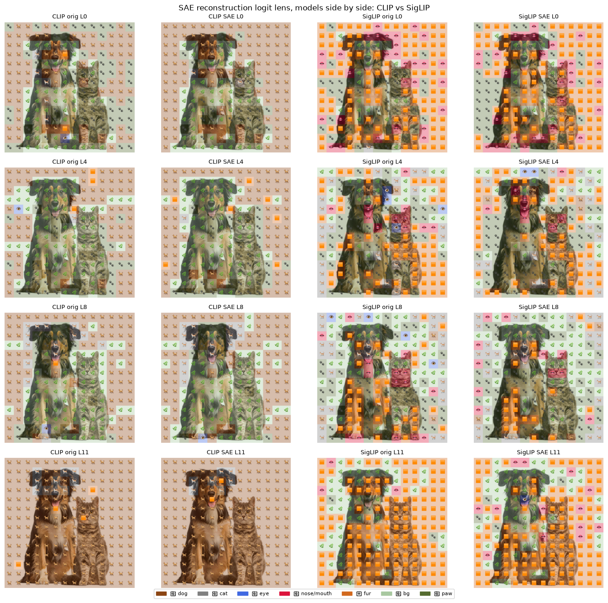
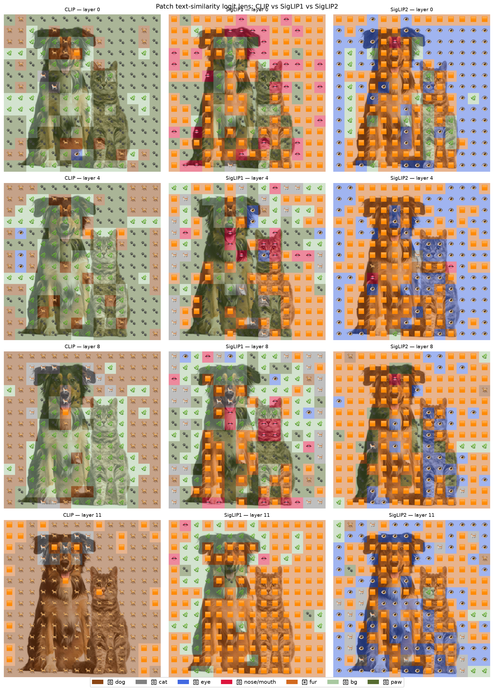

CLIP-B/16, SigLIP-B/16, and a supervised ViT-B/16 share the same architecture. Only the training objective differs, making it the only variable.
One SAE per layer on each model's frozen activations. Measured explained variance (EV): how well a sparse code reconstructs a layer.
The objective measurably changes feature compressibility, and the effect is depth-dependent.
Supervised ViT is most compressible early (EV 0.94 at layer 0) and falls steepest. CLIP is most compressible overall with a mid-network EV bump. SigLIP declines most smoothly and reconstructs best at the final layer.
ReLU + L1 SAEs collapse on these activations (L0 < 1.5 regardless of penalty). Top-$k$ is the fix and gives an exact sparsity dial.
Logit-lens faithfulness: CLIP's late layers survive the sparse round-trip almost perfectly (75% → 95%); SigLIP's mid-layers don't (U-shaped: 78, 64, 65, 75%).
Why care
Vision-language systems in high-stakes settings (autonomous driving, robotics) inherit a frozen pretrained encoder as their perception front-end. When that encoder fails silently on an odd input, the whole system acts on a wrong model of the world with no warning.
SAEs are a leading tool for making an encoder's internal features human-readable so you can audit them. A natural precondition for that audit is knowing which objective produces more inspectable features, and where in the network inspection is reliable. That is the question here.
Setup: what "same backbone" actually means
The three models do not share weights. "Same backbone" means the same architecture: ViT-B/16: 12 transformer blocks, a 768-dimensional residual stream, 16-pixel patches, 196 patch tokens. CLIP, SigLIP, and the supervised ViT are three entirely different sets of learned weights living in an identically-shaped container, trained with different objectives:
CLIP
Contrastive image-text loss (softmax over a batch).
SigLIP
Sigmoid pairwise image-text loss (no softmax normalization across the batch).
Supervised ViT
Plain ImageNet-1k classification.
Because the architecture is fixed, the only variable left is the objective and its data. Any difference in feature structure is attributable to the objective, not depth, width, or model size. Same chassis, three engines: if they drive differently, it is the engine.
There is a bonus: the activation spaces are identically shaped, so the SAE comparison is numerically like-for-like: same $d = 768$, same 196 tokens, same SAE hyperparameters across all three. "12 layers" is not a choice; it is the full depth of ViT-B/16. One SAE sits on each block's residual stream output (hook_resid_post), layers 0–11.
Background in three definitions
SAE
Encode an activation vector $\mathbf{x}$ into a wide but sparse code (here, 128 non-zero entries out of a 3072-dimensional dictionary (4× expansion of the 768-dimensional input)), then decode back to $\hat{\mathbf{x}}$. If a small sparse code rebuilds $\mathbf{x}$ well, the information lived in few directions, and each sparse feature is a candidate concept.
EV (explained variance)
How much of a layer's activation variance the SAE reconstructs. Comparable across layers; raw MSE is not, because residual stream norms grow with depth.
Logit lens
Project a patch's activation onto text label embeddings and read off the nearest label. Run it on the raw activation and again on the SAE reconstruction to see how much the sparse code preserved.
A practical negative result: ReLU + L1 collapses
The standard ReLU + L1 penalty SAE recipe collapses on these activations. L0 (active features per patch) falls below 1.5 across a 10× range of the L1 coefficient, and the SAE mostly outputs its decoder bias. Sparsity here is not L1-controllable.
Switching to a top-$k$ activation makes L0 exactly $k$, at every layer, with zero dead features at every $k$ tried (32, 64, 128), and it cut MSE by roughly 3×. If you are training SAEs on CLIP- or SigLIP-style activations, start with top-$k$. One gotcha: keep l1_coefficient at a tiny non-zero value like 1e-8, or the wandb logging divides by zero.
Result 1: the objective sets compressibility
One SAE per layer, all three models, top-$k$ with $k = 128$, hook_resid_post, ImageNet validation (50K images, 3 passes).
Fig. 1: EV · L0 · MSE · dead features, by layer
Explained Variance
L0 (active features / patch)
MSE loss
Dead features
CLIP-B/16
SigLIP-B/16
ViT-B/16 (supervised)
Every model's EV declines with depth, a shared effect. The differences in shape are attributable to the objective (see text).
Every model's EV declines with depth, a shared effect, not an objective one. The shapes differ:
Supervised ViT: highest EV at layer 0 (0.94; early edge and texture features are very compressible) but steepest decline (0.62 at layer 11) and highest deep-layer MSE.
CLIP (contrastive): lowest MSE at every layer, most compressible overall, and the only model with a mid-network EV bump (around layer 7). Consistent with contrastive pooling producing a lower-rank mid-representation.
SigLIP (sigmoid): smoothest decline and highest EV at the final layer (0.70 vs ~0.62 for the others). Sigmoid loss appears to preserve more distributed, reconstructable per-patch structure at the output.
The intuition: effective rank
A sparse code with a fixed budget can only capture a limited number of independent directions. If a layer's activations live in few directions (low effective rank), a small budget rebuilds them almost perfectly. If they spread over many directions (high rank), the same budget leaves a lot behind.
Fig. 2: Toy illustration, same sparse budget, different compressibility
Synthetic data only (no real activations). This is the analogy, not a measurement. The inference from EV and logit-lens results is that CLIP's late layers sit closer to the low-rank regime; SigLIP's mid-layers closer to high-rank. Directly measuring the effective rank of the real activations is a stated next step.
Future interactive demo candidate. This figure is a good candidate to rebuild as a live slider: vary the rank parameter and watch the reconstruction curves shift. The toy data is already structured for it.
Why k = 128, and why the value matters
$k = 128$ out of 3072 features is ~4% active, sparse enough to stay interpretable. Sweeping $k$ over 32, 64, 128, EV rises log-linearly (~+0.08 per doubling) with no sign of plateauing:
The non-plateauing slope suggests the remaining deep-layer gap is data-limited, not capacity-limited. Reaching EV ~0.9 by $k$ alone would need $k \geq 256$, roughly a twelfth of the dictionary active, which destroys the sparsity that makes an SAE interpretable. The honest lever for higher fidelity is more data, not a bigger $k$.
Result 2: the same effect, seen on an image
Run the logit lens on the raw activations and again on the SAE reconstruction, then measure how many patches keep their label. This is a faithfulness probe: how much of what the model represents survives the sparse bottleneck.
Fig. 4: Per-patch label agreement, original vs SAE reconstruction (7-label text lens)
CLIP-B/16
Monotonic rise to 95%: late layers converge toward a single dominant concept, a low-rank state the sparse code reproduces almost exactly.
SigLIP-B/16
U-shaped: mid-layers hold distributed, diverse per-patch structure, higher-rank and harder to reconstruct sparsely. More patches flip label after the round-trip.
† Supervised ViT: ~28–31% agreement via 1000-class class-logit lens. Not directly comparable: it shares no text encoder with CLIP or SigLIP, so the label spaces are incommensurable.
Agreement = fraction of patches whose nearest text label is unchanged after the SAE round-trip. Single image; needs replication across many images and seeds before the curve shapes are airtight (see Limitations).
The data in full:
Layer
CLIP-B/16
SigLIP-B/16
0
75%
78%
4
82%
64%
8
85%
65%
11
95%
75%
Fig. 5: SAE reconstruction logit lens, CLIP vs SigLIP, by layer

Visual complement to Fig. 4. CLIP's late-layer maps should be nearly identical before and after the round-trip; SigLIP's mid-layer maps should show more divergence.
Fig. 6: Raw logit lens across models (no SAE)

Context for what the SAEs are measuring: CLIP collapsing toward one concept in late layers, SigLIP holding spatial diversity.
Limitations
Scale. 50K images, 3 passes. Deep-layer EV (~0.62–0.70) is well below the ~0.9 that full-scale SAEs reach, so deep-layer claims are proof-of-concept. The robust signal is the contrast between models, not the absolute numbers.
Single seed. The logit-lens agreement numbers come from one image. They need many images and multiple seeds before the CLIP vs SigLIP curve is airtight.
EV ≠ interpretability. High EV does not prove features are monosemantic. Feature-level interpretation (max-activating images per feature) is the obvious next step; the first attempt used too narrow an image set to be conclusive.
Novelty not yet checked. Objective-dependent representation geometry and SAEs on CLIP or DINO are known. The plausibly new angle is the matched SigLIP vs CLIP vs ViT SAE comparison and the depth-dependent compressibility contrast. Treat as preliminary.
What's next
Feature interpretation on a diverse image set (full ImageNet validation, not a 10-class subset): name what selective features fire on at layers 4–6, per model. Runs on CPU locally.
Capacity sweep: vary $k$ or expansion factor to separate intrinsic structure from SAE undertraining, and quantify how much extra capacity SigLIP needs to match CLIP.
Scale toward full ImageNet (1.28M images) to lift deep-layer EV.
Robustness probe tied to the safety framing: do the interpretable features survive image degradation (fog, night, blur) on a driving dataset?
Add SigLIP2 and the second hook point (hook_mlp_out).
SigLIP support and all notebooks are on siglip-support (loader, config, and weight conversion for google/siglip-base-patch16-224 and google/siglip2-base-patch16-224).
colab/Explainer_What_We_Did.ipynb: runs offline on CPU in ~10 seconds; shows the real EV-by-depth plot from the metrics plus the toy rank demo.
colab/SAE_Training.ipynb, SAE_Training_CLIP.ipynb, SAE_Training_ViT.ipynb, SAE_Eval_Comparison.ipynb, SAE_LogitLens_Comparison.ipynb: training and evaluation pipeline.
Feedback welcome, especially from anyone doing vision interpretability who can sanity-check the objective vs compressibility framing or point to prior work on the matched comparison.